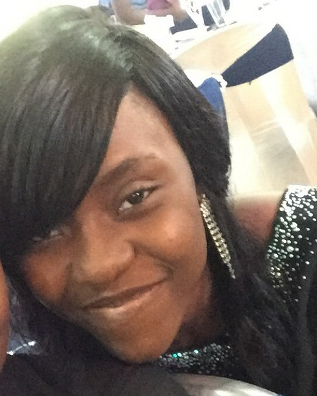

|
 |
I am a Christian. I talk a lot. I like to think its one of my gifts and one of the reasons I'm into acting. I have a passion for creativity. The idea of creating something from nothing thrills me and that is why I love technology so much, I get to build, to invent, to create! I have this weird obsession with chicken, something that remains a mystery to people who know me. I love to read because when I do I'm transported to different worlds and my imagination takes flight. I get easily excited, I love music, writing, travelling, I absolutely adore children and I'm also head-over-heels in love with animation I think of myself as a dreamer. I dream of publishing books, inventing something that would matter, travelling the world and touching lives. So many dreams...but I don't want them to remain just dreams and I'm prepared to work really hard to achieve them. When I was a kid, I dreamt of working with NASA. That might actually happen...who knows? The world is full of endless possibilities. FAMILY BACKGROUNDI'm from Ika North-East, Delta state. Mine is a simple family of four including my parents. I have a younger brother who a cherish with all my heart. My maternal grandmother is the only one of my grandparents still living. I like to think of my extended family as exotic beacause I have aunts and uncles that are yoruba, hausa, among others. I'm quite close with the members of my extended family and I have a lot of adorable little cousins. I love my family very much and though we disagree sometimes, they've always got my back. Afterall, your family members are the only ones who will never give up on you no matter what.EDUCATIONAL HISTORYI attended K.Kotun Memorial Nursery & Primary School and Topgrade Secondary School. I am currently in my third year studying Systems Engineering at the University of Lagos. |